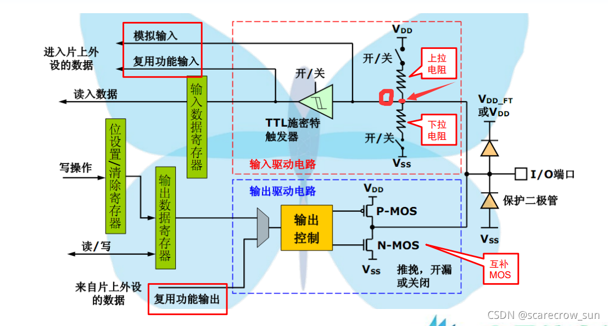
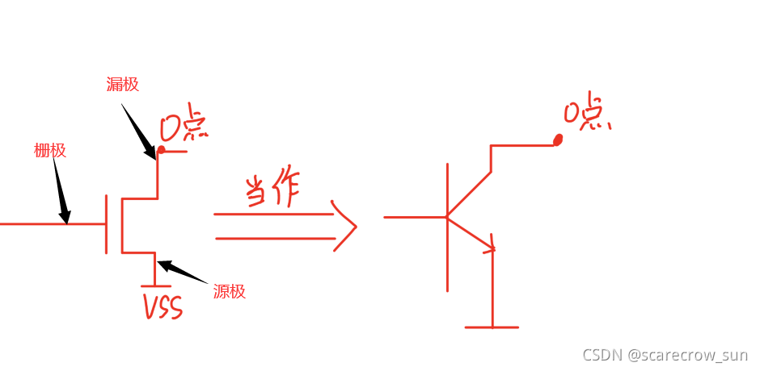

GPIO八种工作模式
Table of Contents
前言
简介
GPIO 是通用输入输出端口的简称，可以通过软件控制其输出和输入。stm32 芯片的 GPIO 引脚与外部设备相连来实现与外部的通信，控制以及信息的采集功能

上拉和下拉
当闭合上图中的 VDD 处的开/关时，此时设置为上拉通路导通，这时候如果不接入外设或者电路断开时，整条回路的电压时断路时的电压，也就相当于电阻不存在，这时候中间处的电平被拉高为 VDD 的电平，也就是处于高电平
如果闭合 VSS 处的开关时，也就是打开下拉电阻，这时候没有外部输入的时候，中间点处电压为 VSS
实际上在 stm32 内部的上拉实际上是一个弱上拉，也就是通过上拉电阻的电流很小，如果想要输出一个大电流，就需要外接上拉电阻了，其实就是增加导线的输出电流。而对于下拉电阻，是让 stm32 的 CPU 引脚输出低电平，结果由于后续电路影响输出的低电平达不到 GND。这时候接入下拉电阻是为了降低导线的输出电流。当上下拉电阻都不开启，此时是浮空模式，引脚的电压是不确定的，此模式下的管脚电压会时不时改变
在 stm32 中上下拉以及浮空模式的配置是通过 GPIOx_CRL 和 GPIOx_CRH 寄存器控制的
上拉电阻和下拉电阻
从图中可知，上拉和下拉电阻都有一个开关，通过配置上下拉电阻开关，可以控制引脚的默认电平，一共有三种状态
- 开启上拉时，引脚默认为高电平
- 开启下拉时，引脚默认为低电平
- 上拉和下拉不开启时，这种为浮空模式
根据上下拉的电阻的阻值大小，可以分为强拉或者弱拉，拉电阻的阻值越小表示电平能力越强，为强拉，可以抵抗外界噪声的能力也越强，相应的功耗就越大。这里的电流可以使用 $\frac{V_{DD}}{R}$ 来计算出来
上拉和下拉电阻电路的开关在实际应用中一般使用MOS管来代替开关来提到
输入工作模式
模拟输入
模拟输入是将 TTL 施密特触发器断开，从模拟输入端口输入
使用单片机时，有时候需要用 AD 采集到 IO 口上面的真实电压，这时候就需要用到模拟输入，为了让外部的电压真实读取到单片机的 AD 模块，既不能闭合上拉开关，也不能让信号经过施密特触发器
可以让 AD 读取端口电压，还可以在低功耗模式下运行，实现省电的作用
上拉输入
当 VDD 所在的上拉电阻闭合，并且下拉电阻断开时，此时当前 IO 口为上拉输入模式。
- 当没有信号输入时，此时电平就是 VDD 的电平，读取到的电平就是高电平
- 当高电平信号输入时，此时 VDD 与 O 处几乎没有电势差，此时的 O 点电平仍旧是高电平，由于没有信号输入时也是高电平，所以没办法确定是否有输入
- 当低电平输入时，此时 VDD 和 O 之间产生了电势差，但是由于上拉电阻存在，所以不会出现一个很大的电流。所以此时读到的就是低电平
下拉输入
当 VSS 所在的下拉电阻闭合，并且上拉电阻断开时，此时当前 IO 口为下拉输入
- 当没有信号输入时，电平就是 VSS 的电平，就是低电平
- 当高电平信号输入时，此时 O 与 VSS 之间形成了电势差，此时 O 点处就是高电平
- 当低电平信号输入时，此时 O 与 VSS 之间没有电势差，此时 O 点处就是低电平
浮空输入
VDD 和 VSS 所在的路径的两个开关同时断开，此时既没有上拉也没有下拉
- 当 IO 口没有接入输入值时，电平会是一个不确定的值，也就是浮空状态。电平会处于一个跳变的状态
- 只有当输入了一个高电平或者低电平才会确定下来
优点
这种输入模式的电平会完全取决于外部电路而与内部电路无关，可以用作对开关按键的读取
缺点
在没有外部电路接入时，IO 脚浮空会使得电平不稳定
输出工作模式
开漏输出
开漏输出最重要的就是 N-MOS 这一部分，可以把这个 MOS 管当作一个三极管。

当给左侧一个高电平时，O 和 GND 就会接通，O点的输出就是一种反向器的输出，也就是O点的电平会和左侧MOS的栅极（三极管的基极）相反。
- 给一个低电平时，MOS 管关闭，此时输出电压为浮空状态
- 给一个高电平，那么 MOS 管导通，相当于 IO 口与 VSS 相连，此处就输出一个高电平电压
特点
- 只能输出低电平，不能输出高电平，如果要输出高电平，需要外接上拉
- 开漏输出具有线与功能，一个为低则总线全为低，多用于 I2C 和 SMBUS 总线
推挽输出
推挽输出就是可以需要利用两个不同的 MOS 管来实现输出
P-MOS 和 N-MOS 是不同的控制方式，当给一个高电平时，P-MOS 导通，N-MOS 不导通，此时 IO 接口接通在 VDD，此时输出的是高电平。
当给一个低电平时，N-MOS 导通，P-MOS 不导通，此时 IO 口接通在 VSS 电源上，此时输出低电平
优点
带载能力强
特点
- 可以输出高低电平，用于连接数字器件，高电平由 VDD 决定，低电平由 VSS 决定
- 推挽结构收到两路互补的信号控制，开关管在一个导通的时候另外一个截止。开关效率高电流大，驱动能力强
- 输出高电平时，电流输出到负载，叫做灌电流，也就是推。输出低电平时，负载电流流向芯片，叫做拉电流，也就是挽
复用开漏输出
复用开漏就是不希望使用单片机内部来输出，可以进行复用，将输出特性转移到其它外设上
复用推挽输出
复用推挽就是不希望使用单片机内部来输出，可以进行复用，将输出特性转移到其它外设上
GPIO 的速率
GPIO 的输出速率
GPIO 的输出速度即 IO 口驱动电路的响应速度，不是输出信号的速度，输出信号的速度取决于软件程序
stm32 微控制器 IO 管脚内部有三个响应速度的驱动电路，可以根据需要选择，推荐 IO 引脚的输出速度是其输出信号的 5-10 倍
- 2MHz 用于蜂鸣器，数码管，按键，串口等
- 10MHz 用于 400Kbps 下的 I2C 复用功能的输出引脚
- 50MHz 用于 9M/18Mbps 下 SPI 复用功能的输出引脚，FSMC 复用功能连接存储器的输出引脚
GPIO 的响应速率
GPIO 响应速度就是当电平需要改变时，这个改变的时间需要多少，如果对这个要求十分严格，那就一定要使用高输出速率的 IO 口